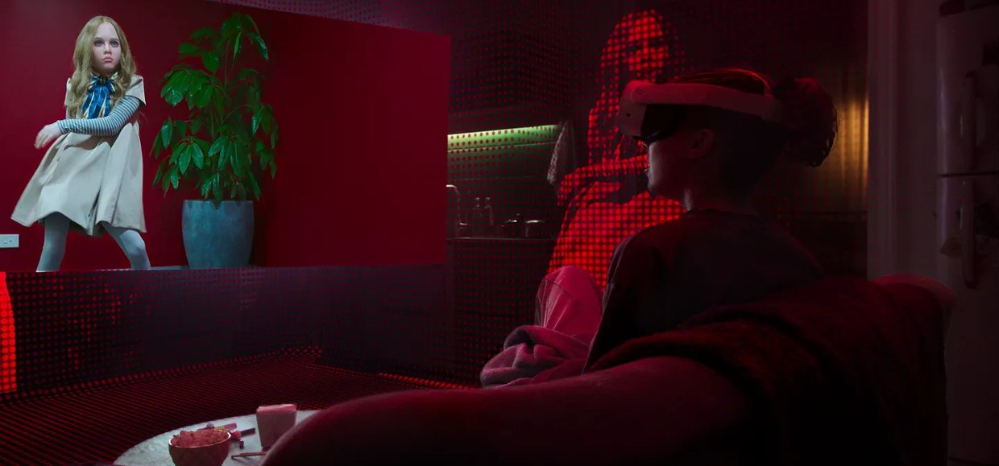
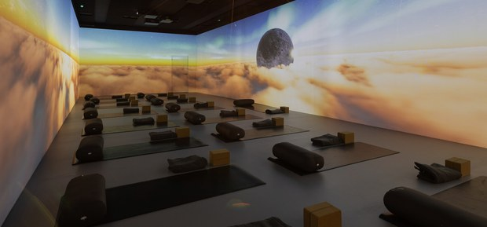
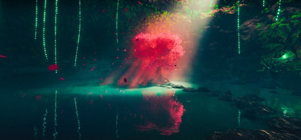
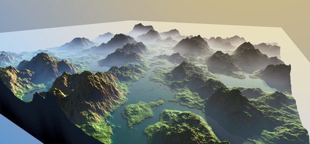

Graphics Programmer & Technical Artist
I’ve been drawing with mathematics for years, and since 2020 it has been my job.




A live-visuals engine on WebGPU: node graphs compile to multipass WGSL, driven by live audio.
Built the company’s booking platform and its AI agent.
Worked on Blumhouse Enhanced Cinema for Meta Quest, nominated for a 2026 Primetime Emmy. Real-time global illumination for VR.
Led the team behind a 360° projection installation, with real-time 3D across several servers.
Led a small team on compute-shader and Burst VFX in Unity.
A material shader library, plus grass and volumetric lighting for mobile and desktop.
Custom mobile lighting, stylized parallax clouds and screen-space god rays.
Shaders and VFX on a small title.
Neural Shaders, Explained With Clouds A small network trained against a path tracer.
GPU Cache Hierarchy Why one texture fetch costs more than another.